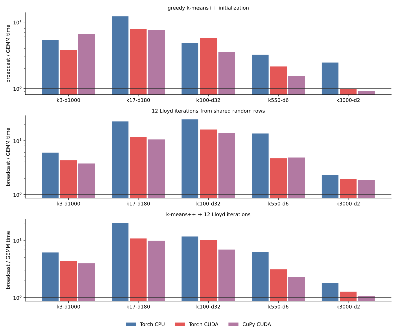
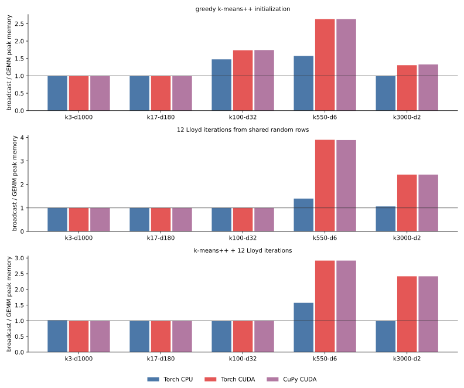
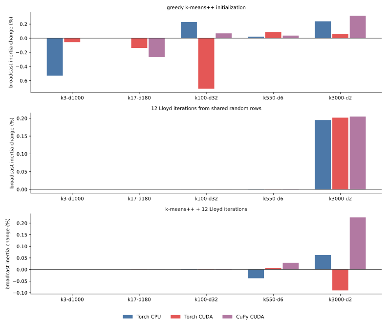

016 — GEMM versus broadcast distances across KMeans phases
This experiment replaces the Gram-identity distance
||x - c||² = ||x||² + ||c||² - 2 x @ c.Twith direct broadcasting
sum((x[:, None, :] - c[None, :, :]) ** 2, axis=-1)in greedy k-means++ initialization, Lloyd iterations from shared centers, and the full fit. The comparison covers PyTorch CPU, PyTorch CUDA, and CuPy CUDA. The centroid update is unchanged: every row uses the native update from 015, so only distance evaluation differs.
The implementation and driver are pinned to commit c7b001e:
broadcast_scores_argminis the broadcast equivalent of the GEMM tile step;broadcast_distances_to_candidates_tiledsupplies broadcast distances to greedy k-means++;kmeans_plusplususes the selected distance for the first center too;_broadcast_tile_nbounds each 3D difference tile;workermeasures one fresh-process row.
results.json contains all 270 final rows. tables.md contains every raw mean, standard deviation, and ratio.
Setup
- The five tasks from 011–015:
k3-d1000,k17-d180,k100-d32,k550-d6, andk3000-d2; float32; three seeds; 4 CPU threads; TF32 disabled;max_iter=12;tol=1e-8; one NVIDIA L4. init: greedy k-means++ only. Quality is mean squared distance from every sample to its nearest returned center. This quality pass is outside the measured time and memory.lloyd: 12 iterations from the same random data rows for both formulas, followed by a final assignment and direct assigned-distance inertia.fit: greedy k-means++ followed by the same Lloyd measurement.- GEMM uses the tuned estimator schedule. Broadcast uses the same centroid tile but reduces the sample tile enough to cap
(tile_n, tile_k, n_features)at 128 MiB. Without this cap, the estimator's widest CUDA GEMM tile could request tens of GiB as a broadcast temporary. The cap applies to the difference tensor; eager evaluation can briefly retain its squared tensor too. - GPU workers warm the selected distance primitive before measurement. CPU input is fully loaded before the
VmHWMbaseline. CUDA memory is the backend allocator peak above its baseline. - The initial suite used a 60 s worker cap. The 30 censored CPU broadcast rows were selectively rerun with 240 s, and the two longest repetitions with 360 s. Every final row completed; the longest call took 237.0 s.
Time

Values are broadcast mean divided by GEMM mean. Less than 1 favors broadcast.
| phase and backend | k3-d1000 | k17-d180 | k100-d32 | k550-d6 | k3000-d2 |
|---|---|---|---|---|---|
| init, Torch CPU | 5.37x | 12.20x | 4.86x | 3.22x | 2.46x |
| init, Torch CUDA | 3.76x | 7.80x | 5.70x | 2.14x | 0.98x |
| init, CuPy CUDA | 6.56x | 7.65x | 3.57x | 1.55x | 0.92x |
| Lloyd, Torch CPU | 5.96x | 23.01x | 25.18x | 13.67x | 2.34x |
| Lloyd, Torch CUDA | 4.28x | 11.64x | 16.22x | 4.67x | 1.96x |
| Lloyd, CuPy CUDA | 3.73x | 10.56x | 14.01x | 4.83x | 1.87x |
| fit, Torch CPU | 6.14x | 20.22x | 11.67x | 6.27x | 1.77x |
| fit, Torch CUDA | 4.32x | 10.79x | 10.24x | 3.11x | 1.26x |
| fit, CuPy CUDA | 3.96x | 9.85x | 6.88x | 2.27x | 1.06x |
GEMM wins 43 of 45 phase/backend/task comparisons. The exceptions are only initializer-only at 3000 clusters and 2 features: broadcast takes 1.41 s against 1.43 s on Torch CUDA and 2.68 s against 2.92 s on CuPy. At two features, direct subtraction is cheap, and k-means++ compares only 10 candidates per round; avoiding the norm and matrix-product setup narrowly wins.
Lloyd and full fit still favor GEMM at that endpoint because assignment compares 128-centroid tiles rather than the initializer's 10 candidates. Even there, the gap contracts to 1.87–1.96x for Lloyd and 1.06–1.77x for full fit. The worst region is the middle of the task mix: at 17–100 clusters, broadcast Lloyd is 10.6–25.2x slower, and full fit is 6.9–20.2x slower.
For scale, full-fit raw means are:
| backend and method | k3-d1000 | k17-d180 | k100-d32 | k550-d6 | k3000-d2 |
|---|---|---|---|---|---|
| Torch CPU, GEMM | 17.33 s | 11.56 s | 17.89 s | 18.72 s | 41.81 s |
| Torch CPU, broadcast | 106.30 s | 233.77 s | 208.75 s | 117.36 s | 74.09 s |
| Torch CUDA, GEMM | 0.92 s | 0.75 s | 0.67 s | 1.01 s | 1.87 s |
| Torch CUDA, broadcast | 3.99 s | 8.13 s | 6.89 s | 3.14 s | 2.36 s |
| CuPy CUDA, GEMM | 1.01 s | 0.84 s | 1.02 s | 1.71 s | 3.42 s |
| CuPy CUDA, broadcast | 4.01 s | 8.27 s | 7.03 s | 3.88 s | 3.63 s |
Memory

| phase and backend | k3-d1000 | k17-d180 | k100-d32 | k550-d6 | k3000-d2 |
|---|---|---|---|---|---|
| init, Torch CPU | 1.00x | 1.00x | 1.47x | 1.57x | 0.99x |
| init, Torch CUDA | 1.00x | 1.00x | 1.73x | 2.63x | 1.31x |
| init, CuPy CUDA | 1.00x | 1.00x | 1.74x | 2.63x | 1.33x |
| Lloyd, Torch CPU | 1.00x | 1.00x | 1.00x | 1.40x | 1.06x |
| Lloyd, Torch CUDA | 1.00x | 1.00x | 1.00x | 3.90x | 2.42x |
| Lloyd, CuPy CUDA | 1.00x | 1.00x | 1.00x | 3.89x | 2.42x |
| fit, Torch CPU | 1.02x | 1.00x | 0.99x | 1.57x | 0.99x |
| fit, Torch CUDA | 1.00x | 1.00x | 1.00x | 2.92x | 2.42x |
| fit, CuPy CUDA | 1.00x | 1.00x | 1.01x | 2.92x | 2.42x |
Broadcast never gives a material memory saving. On the wide tasks, input-sized row-norm and assignment buffers set the peak, hiding the bounded broadcast tile. At 550 clusters and 6 features, where those buffers are small, broadcast raises CUDA peak memory from 74 to 286–287 MiB for Lloyd (3.9x), and from 98 to 286 MiB for full fit (2.9x). At 3000 clusters and 2 features it raises full fit from 68 to 164 MiB (2.4x).
The near-1.0 CPU ratios include VmHWM measurement granularity and retained allocator effects. The apparent 0.99x values are noise, not broadcast allocating less.
Quality

The distance formulas are mathematically equivalent but not bitwise equivalent in float32. Greedy k-means++ feeds distances into weighted random sampling, so roundoff can select different centers and change initializer quality in either direction:
- broadcast initializer inertia ranges from 0.71% lower to 0.32% higher than GEMM across all measured cells;
- from shared centers, the first four Lloyd tasks agree within 0.0004%;
- the quantized 3000-cluster task ends 0.20% higher with broadcast from shared centers on all three backends, because small score differences alter ties and subsequent empty-center relocation;
- after full fit, broadcast ranges from 0.09% lower to 0.22% higher. There is no consistent quality advantage for either formula.
| full-fit broadcast inertia change | k3-d1000 | k17-d180 | k100-d32 | k550-d6 | k3000-d2 |
|---|---|---|---|---|---|
| Torch CPU | 0.0000% | -0.0001% | -0.0018% | -0.0377% | +0.0626% |
| Torch CUDA | 0.0000% | -0.0004% | +0.0011% | +0.0057% | -0.0902% |
| CuPy CUDA | 0.0000% | +0.0002% | +0.0012% | +0.0291% | +0.2246% |
Every Lloyd and full-fit run executes all 12 iterations, so these quality differences are not caused by different convergence iteration counts.
Conclusion
- Keep GEMM as the default distance formulation on CPU and CUDA. It is faster in every Lloyd and full-fit cell, usually by a large factor, and uses equal or less peak memory.
- Direct broadcast is competitive only for initializer-only work with extremely low feature dimension: at
k3000-d2it is 2% faster on Torch CUDA and 8% faster on CuPy. That narrow win does not survive the Lloyd phase and does not justify a second production path. - Broadcast is not a memory optimization even with a strict 128 MiB tile cap. Its eager 3D intermediates raise measured CUDA peaks by as much as 3.9x.
- Quality is effectively neutral: formulation roundoff perturbs stochastic initialization and quantized ties, but final inertia stays within 0.23%.
Previous: native backend updates in the estimator. Next: GEMM cancellation fallback. Index: journal.